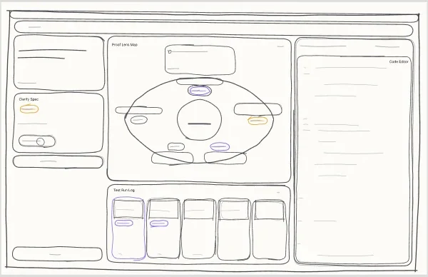
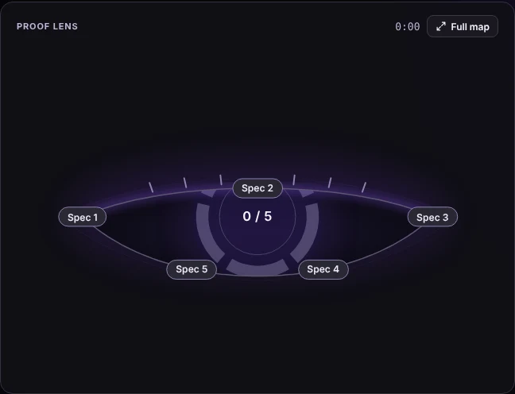
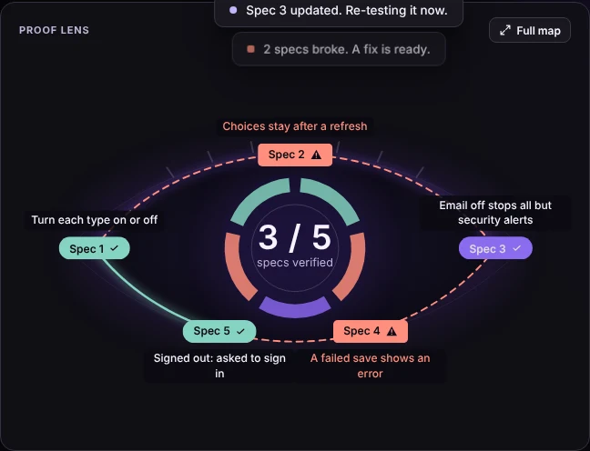
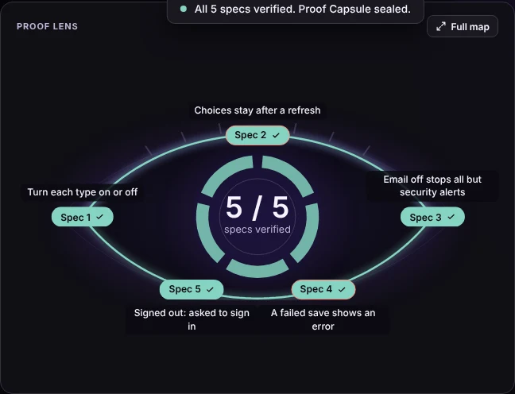

01
Test with working engineers
So far three participants tried it in a lab setting. Next, engineers use it on their own sprint tickets, with their own agents and codebases.
How developers check AI-generated code against a task’s acceptance criteria, where that check breaks down, and the tool it led to.
←→ move between sections
Developers already check AI-generated code against the task’s acceptance criteria. How sure they feel depends on how clearly the story was written, how much context the AI was given, and how much of their testing they can show afterwards. When something is missed, it surfaces at peer review, and the rework starts again.
AI-assisted software development professionals need a way to ensure AI-generated code meets the acceptance criteria of their assigned task before sending it for peer review, because incorrect or incomplete output increases debugging time, delaying task completion.
How might we help software developers confidently verify that AI-generated code meets the acceptance criteria of their assigned task before sending it for peer review?
I talked to the people who write, review and plan AI-assisted code, coded every interview into themes, and mapped who and what surrounds the developer.
Seven people, three roles. Open a group to see what each interview taught me.
I coded the interviews, clustered the codes and grouped them into eight themes, placed in the moment they happen. Open a note to read it.
Five maps, from who shapes AI output to the exact steps a developer takes. Pick one to open it.
The journey map, mind map and user flow narrowed the problem to one moment. Then two rounds of sketches and wireframes, with usability testing in between.
Every screen from both rounds. It plays on its own; pick any step on the left, or click the screen to stay on it.
Three participants worked through the version 1 prototype and the course instructor reviewed it. Their notes grouped into eight findings. Pick one to hear it in their words.
A companion to the AI agent in VS Code. When the agent says it is done, SpecSight checks the work against the task’s specs, shows what broke and why, and hands the evidence to peer review.
Developers told me they want the AI to show its evidence before they approve. So SpecSight’s mark is an eye that looks at each spec, tests it, and reports what it sees, in one glance. Pick a state below to see it.
Each spec owns a slice of the iris, so you can tell how the check is going without reading a word.
Testers found colours reused for different things. Now each colour means one thing everywhere.
It squints while reading, gets curious when a spec needs you, worries when something breaks, and smiles when everything passes.




Each clip is recorded from the working prototype and plays into the next. Pick any moment to jump to it.
A ticket is waiting in VS Code. Ask the agent to fix it, then let SpecSight verify the result against its five specs.
The agent, the code and the tests are simulated in your browser. Nothing is sent anywhere.
Open full screenSpecSight is built for a laptop screen. On a phone, open it full screen and turn the phone sideways.
The prototype covers one developer and one task, up to the moment the work goes to peer review. Three directions to take it further.
So far three participants tried it in a lab setting. Next, engineers use it on their own sprint tickets, with their own agents and codebases.
Reviewers and QA asked how the code was tested. A reviewer view of the Proof Capsule would answer that inside the pull request, spec by spec.
Developers often carry two tickets that touch the same code. SpecSight could check both tasks’ specs in one run, flag when a fix for one breaks a spec of the other, and send one Proof Capsule for both to review.